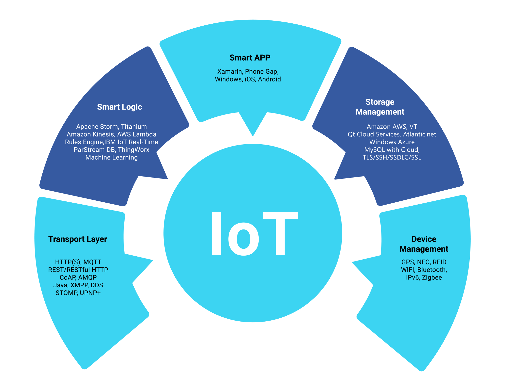
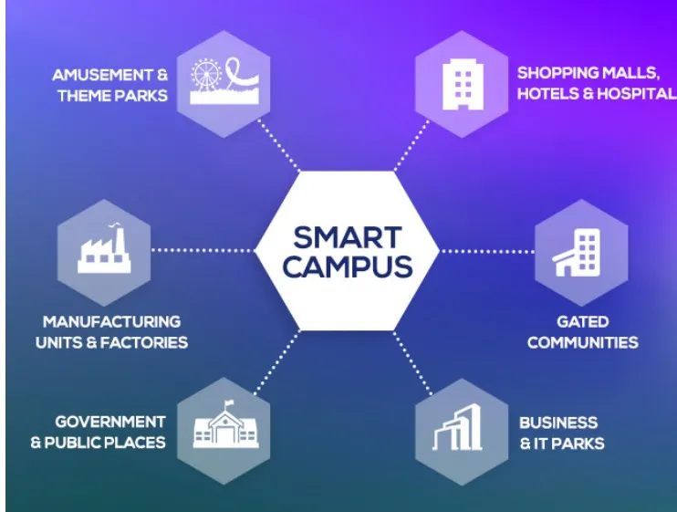

Internet of Things (IoT) is the central nerve of this millennium enabling Intelligent interaction between humans (applications) and things (sensors to systems) to exchange information & knowledge for unfathomable value creation.

IoT Solution platform for various types of sensors and wireless communication strategies.
Wireless Communication technologies like 802.11a/b/g/n/ac/ad/ax, Bluetooth 4.0, BLE, Zigbee.
These IoT Solutions are being used by customers since last 3 years.
You can now Track your fleet or any vehicle with one click, Votartech has made it easy to manage with this plug and play technology. It uses a GPS device that fits into the vehicle’s OBD2 port for gathering data needed to ensure the operation is running smoothly and safely. The data is sent to cloud using 4G/5G/Wi-Fi technology for processing and analysis. It is a cost-effective and easy process that does not require any hard-wiring or difficult installation.
This is the perfect solution for any size fleet. This solution ensures that your fleet is productive and efficient and keeps people safe and customers well served.

IoT solutions for Smart Buildings are used to connect and automate the building, technology, and energy systems to transform the way facilities are managed.
By streamlining building automation, operating cost is reduced, improved occupancy services are achieved and building’s impact on the environment is minimized.
Coupled with technologies like IoT for Smart Transport and Geo Fencing etc a convenient and secure environment is created Votarytech provides complete solutions in Smart Campus domain and it can provide tailor made solutions as per the specifications.